Database
The database is the data setup for iHRIS v5.
It allows iHRIS users to generate various data settings which will be used globally in the system.
Cadres
A cadre refers to individuals who are typically organized and equipped to perform specific tasks or roles within the healthcare system. Examples of Cadres include: Community Health Staff, Pharmacists, Lab Technicians etc.
Add cadre
To add a cadre, click the blue button **Add Cadre **
Capture the name of the cadre to be displayed, assign a specific code and give a definition to the cadre, then save the details captured.


Search cadre
You can search the various cadres captured in the system under this feature.
You can search by code or by display
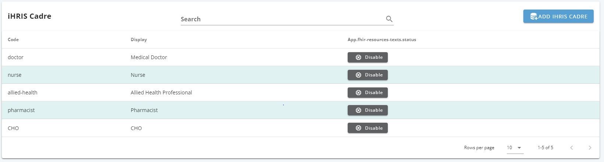
Your results shall be displayed as above
Classification
A classification refers to a category of the practitioners with similar characteristics captured in the system. Classification can include categories such as support staff, technical staff etc.
Add classification
To add a classification, click the blue button **Add Classification **
Capture the name of the classification to be displayed, assign a specific code and give a definition to the classification.
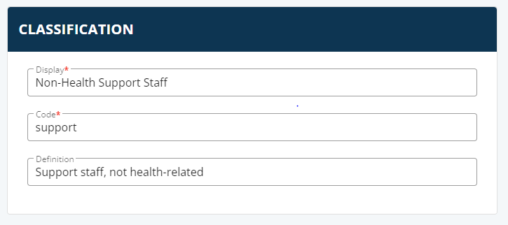
Search classification
You can search the various classifications captured in the system under this feature.
You can search by code or by display

Your resu \lts shall be displayed as above
Degree/ Course
In iHRIS a degree is an academic award conferred by an educational institution, such as a university or college, upon the completion of a program of study. It signifies the attainment of a certain level of knowledge, skills, and expertise in a specific field. Examples of academic degrees include Bachelor's, Master's, and Doctorate degrees.
Add degree
To add a degree, click the blue button **Add Degree **
Capture the name of the degree to be displayed, assign a specific code and give a definition to the degree, then save the details captured.

Search degree
You can search the various degrees captured in the system under this feature.
You can search by code or by display
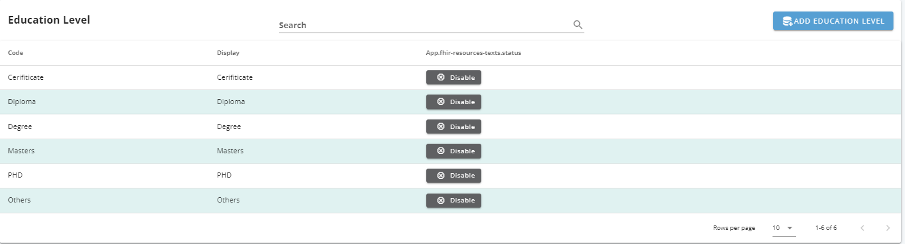
Your results shall be displayed as above
Disciplinary Action Type
A disciplinary action type refers to various categories of actions an employee can face in the disciplinary process
Add disciplinary action type
To add a disciplinary action type, click the blue button Add Disciplinary Action Type
Capture the name of the disciplinary action type to be displayed, assign a specific code and give a definition to the disciplinary action type, then save the details captured.

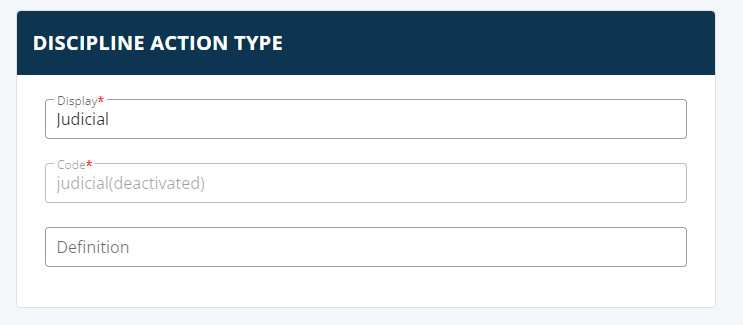
Search disciplinary action type
You can search the various disciplinary action types captured in the system under this feature.
You can search by code or by display
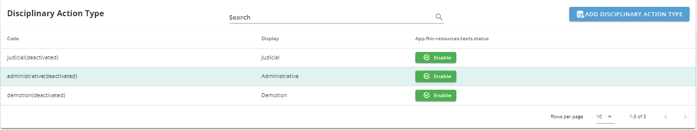
Your results shall be displayed as above
Education Institution
A Education Institution refers to an organization or establishment that provides education and training related to healthcare, medical sciences, and health-related fields. These institutions play a crucial role in preparing individuals to pursue careers in healthcare, acquire medical knowledge, and develop skills necessary for providing quality patient care. These invstitutions are specifically referred to in regards to providing in service training to health workers in iHRIS v5.
Add Education Institution
To add a Education Institution, click the blue button **Add Institution **
Capture the name of the Education Institution to be displayed, assign a specific code and give a definition to the Education Institution, then save the details captured.
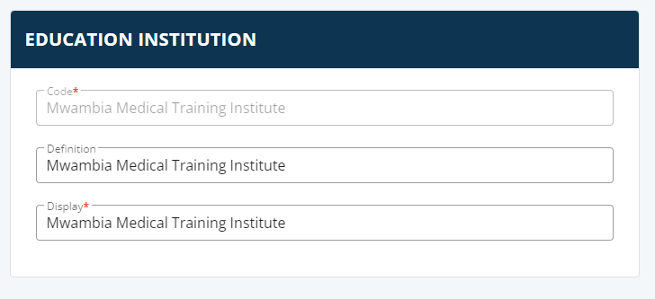
Search Education Institution
You can search the various Education Institutions captured in the system under this feature.
You can search by code or by display
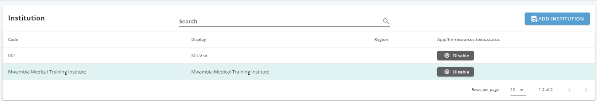
Your results shall be displayed as above
Education Level
A Education Level refers to the various categories of education qualifications. Examples are : Certificate, Diploma etc
Add Education Level
To add a Education Level, click the blue button **Add Education Level **
Capture the name of the Education Level to be displayed, assign a specific code and give a definition to the Education Level, then save the details captured.

Search Education Level
You can search the various Education Levels captured in the system under this feature.
You can search by code or by display
Your results shall be displayed as above
Education Major
A Education Major refers to various specialization undertaken by health workers in their specific career paths.
Add Education Major
To add a Education Major, click the blue button **Add Education Major **
Capture the name of the Education Major to be displayed, assign a specific code and give a definition to the Education Major, then save the details captured.

Search Education Major
You can search the various Education Majors captured in the system under this feature.
You can search by code or by display
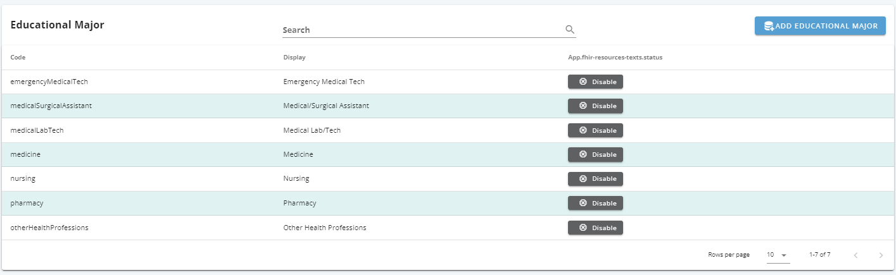
Your results shall be displayed as above
Employment Status
Employment Status refers to an employee's current emploeyment terms in relation to their work or job in the facility/ organizatione.g. full time, contract
Add Employment Status
To add a Employment Status, click the blue button **Add Employment Status **
Capture the name of the Employment Status to be displayed, assign a specific code and give a definition to the Employment Status, then save the details captured.

Search Employment Status
You can search the various Employment Statuss captured in the system under this feature.
You can search by code or by display

Your results shall be displayed as above
Funds Source
A Funds Source refers to the source of funds which are used to pay an employee in a facility or organization.
Add Funds Source
To add a Funds Source, click the blue button **Add Funds Source **
Capture the name of the Funds Source to be displayed, assign a specific code and give a definition to the Funds Source, then save the details captured.
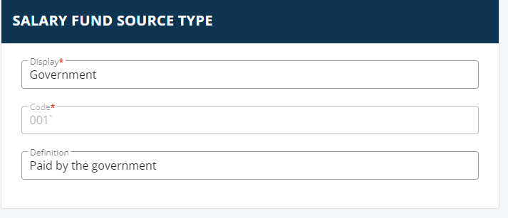
Search Funds Source
You can search the various Funds Sources captured in the system under this feature.
You can search by code or by display

Your results shall be displayed as above
Identifier Types
Identifier Types refer to various unique identifiers which can be used to uniquely identify an employee. Examples include: Driving lisence number, employee number, ID number, passport number etc.
Add Identifier Types
To add Identifier Types, click the blue button **Add Identifier Types **
Capture the name of the Identifier Types to be displayed, assign a specific code and give a definition to the Identifier Types, then save the details captured.

Search Identifier Types
You can search the various Identifier Typess captured in the system under this feature.
You can search by code or by display
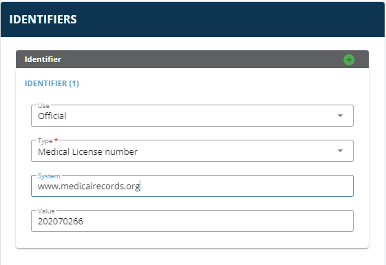
Your results shall be displayed as above
In-Service Training
In Service Training refers to training undertaken by employees during their employment. These may range from short term courses to full certifications which may be undertaken at any time during an employee's engagement period.
Add In Service Training
To add In Service Training, click the blue button Add In Service Training
Capture the name of the In Service Training to be displayed, assign a specific code and give a definition to the In Service Training, then save the details captured.
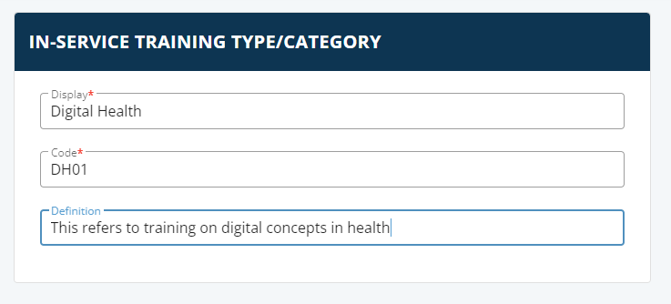
Search In Service Training
You can search the various In Service Trainings captured in the system under this feature.
You can search by code or by display
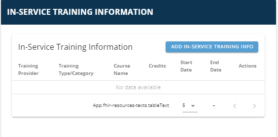
Your results shall be displayed as above
Job Titles
A Job Title refers to a specific name or label given to a particular position or role within an organization that describes the nature of the work, responsibilities, and level of authority associated with that role. e.g. Registered Nurse I
Add Job Title
To add a Job Title, click the blue button Add Job Title
Capture the name of the Job Title to be displayed, assign a specific code and give a definition to the Job Title, then save the details captured.
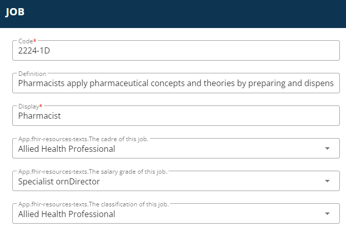
Search Job Title
You can search the various Job Titles captured in the system under this feature.
You can search by code or by display

Your results shall be displayed as above
Job Types
A Job Type refers to the different categories or classifications that describe the nature of changes or transitions that occur within an employee's role or position in an organization. These categories help categorize and communicate the reasons for changes in an employee's job status.
Add Job Type
To add a Job Type, click the blue button Add Job Type
Capture the name of the Job Type to be displayed, assign a specific code and give a definition to the Job Type, then save the details captured.

Search Job Type
You can search the various Job Types captured in the system under this feature.
You can search by code or by display

Your results shall be displayed as above
Leave Types
Leave types refer to the various categories of authorized time off that employees can take from work for specific reasons. Each type of leave is associated with different circumstances and policies, allowing employees to manage their work-life balance, attend to personal needs, and address health-related issues. Here are some examples of leave types: annual leave, sick leave, maternity leave
Add Leave Type
To add a Leave Type, click the blue button Add Leave Type
Capture the name of the Leave Type to be displayed, assign a specific code and give a definition to the Leave Type, then save the details captured.

Search Leave Type
You can search the various Leave Types captured in the system under this feature.
You can search by code or by display
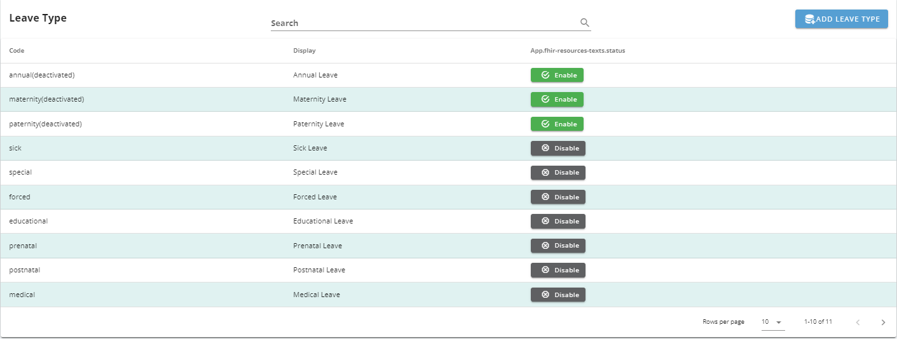
Your results shall be displayed as above
Pay Frequency
Pay frequency, also known as pay period or payroll frequency, refers to the regular interval at which employees receive their compensation or salary from their employer. This interval is determined by the organization's payroll policies and can vary based on industry standards, company practices, and legal requirements.
Add Pay Frequency
To add a Pay Frequency, click the blue button **Add Pay Frequency **
Capture the name of the Pay Frequency to be displayed, assign a specific code and give a definition to the Pay Frequency, then save the details captured.
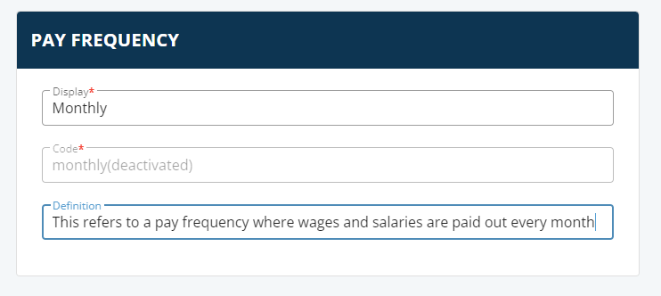
Search Pay Frequency
You can search the various Pay Frequencies captured in the system under this feature.
You can search by code or by display

Your results shall be displayed as above
Reasons for Change/Departure
A Reason for Change/Departure refers to the reason why the employee's record is ammended or changed. Examples of Reasons for Change/Departure include: Transfer, Retirement.
Add Reason for Change/Departure
To add a Reason for Change/Departure, click the blue button **Add Reason for Change/Departure **
Capture the name of the Reason for Change/Departure to be displayed, assign a specific code and give a definition to the Reason for Change/Departure, then save the details captured.

Search Reason for Change/Departure
You can search the various Reason for Change/Departures captured in the system under this feature.
You can search by code or by display

Your results shall be displayed as above
Salary Grades
A salary grade, also known as a pay grade, is a system used by organizations to categorize and establish compensation levels for different jobs or positions within the company. Salary grades help streamline the process of determining salaries, making compensation structures more consistent and transparent.
Add Salary Grade
To add a Salary Grade, click the blue button **Add Salary Grade **
Capture the name of the Salary Grade to be displayed, assign a specific code and give a definition to the Salary Grade, then save the details captured.

Search Salary Grade
You can search the various Salary Grades captured in the system under this feature.
You can search by code or by display

Your results shall be displayed as above